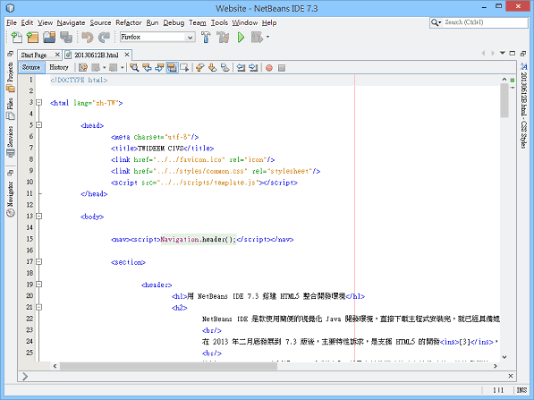
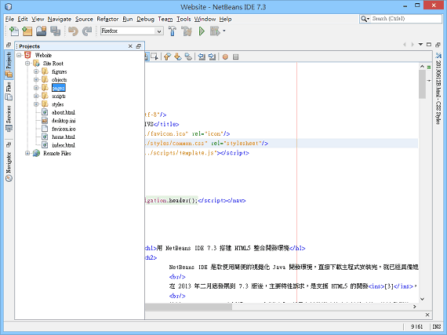
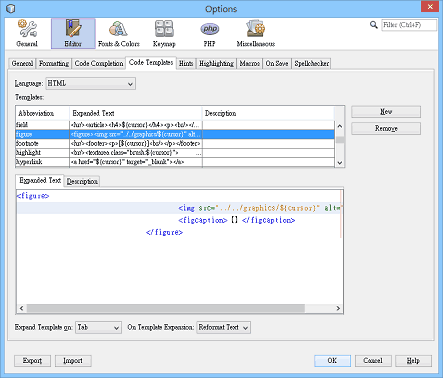
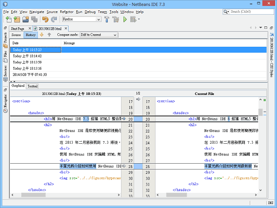

用 NetBeans IDE 7.3 搭建 HTML5 整合開發環境
NetBeans IDE 是款使用簡便的視覺化 Java 開發環境，直接下載主程式安裝完，就已經具備媲美 Visual Basic 的 RAD 介面[1]，卻又有威力強悍的專案管理功能。[2]
在 2013 年二月底發展到 7.3 版後，主要特性訴求，是支援 HTML5 的開發[3]，企圖成為 RIA (Rich Internet Application) 的開發環境。
使用 NetBeans IDE 來編輯 HTML 有個好處，就是它具備即時檢查文法的功能，能讓我們第一時間就發現錯誤，並且寫出格式良好的文件。此外，類似版本控制的 History，能讓我們追蹤每張網頁的修改歷程，也是不錯的功能。
本單元將介紹如何使用 NetBeans IDE 7.3 搭建 HTML5 的開發環境，將原本手邊既有的 HTML 網站資料夾，設置為 NetBeans 的專案。

建立網站專案
將既有網站的資料夾，設置為 NetBeans 的 HTML5 Application 專案：
「功能表」→「File」→「New Project」→「HTML5 Application with Existing Sources」→「在 Site Root 指定既有網頁的資料夾」→不希望 NetBeans 的專案設定檔破壞既有網頁資料夾結構的話，在「Project Directory」指定另外用來存放專案的資料夾。
制定專屬範本
自行設置的網站，專案架構與 NetBeans 預期的做法不同，於是導致 IDE 文字編輯器的文法檢查功能，無法正常辨識像是 CSS 的 class 名稱。
在 NetBeans IDE 左上角的 Projects 窗框，於 HTML5 專案圖示上，按出滑鼠右鍵選單，然後執行「Save as Template」，並完成設置，就能讓文字編輯器找到 *.html 檔裡面所用 *.css 與 *.js 檔的路徑，正確剖析語法之間的關係。

修改字元編碼
NetBeans IDE 專案設置的字元編碼不符時，例如專案設置為 Big5，卻載入 UTF-8 的網頁，文字編輯器裡面的中文會顯示成亂碼。設置字元編碼的做法如下：
「在 Projects 窗框裡在專案圖示按出滑鼠右鍵選單」→「Properties」→「Sources」→「將 Encoding 設置為你想要的字元編碼」
修改執行網頁用的瀏覽器
NetBeans IDE 7.3 預設使用 Chrome 瀏覽器來顯示網頁，想修改的話：
「在 Projects 窗框裡在專案圖示按出滑鼠右鍵選單」→「Properties」→「Browser」→「Firefox」
修改文法規則
文字編輯器在即時檢查文法時，如果覺得有些規則你不打算遵循，希望別再提示，可以自行關閉：
「功能表」→「Tools」→「Options」→「Editor」→「Hints」→「Language」→「HTML」→「自行針對各項規則取消勾選」
樣板
你可以把整塊常用的語言結構，設置為可用簡短識別名稱叫用的樣板：
「功能表」→「Tools」→「Options」→「Editor」→「Code Templates」→「Language」→「HTML」→「New」→「輸入 Abbreviation 名稱」→「在 Expanded Text 輸入語言內容」→「不希望引用樣板時自動重新縮排的話，將 Reformat Text 設置為 Do Nothing」
製作好樣板，要使用的話，在文字編輯器中，先輸入 Abbreviation 名稱，然後按 Tab 鍵，即可轉換為 Expanded Text 的內容。

你還可以在輸入的語言內容中，使用 ${cursor} 表示游標位置，例如：
<p>${cursor}</p>
這樣 Abbreviation 名稱轉換為 Expanded Text 後，游標位置會像 <p>|</p> 這樣，移至兩個標籤之間，方便直接輸入。
取消 Tab 字元改用空白字元替代的功能
有時候因為使用的網頁空間有限，所以對網頁的檔案大小會想斤斤計較，連「四個空白佔用四個位元組，改成一個 Tab 的話只佔用一個位元組」都要計較，這時就會想關閉自動將 Tab 改成空白字元的功能。做法是：
「功能表」→「Tools」→「Options」→「Editor」→「Formatting 」→「將 Expand Tabs to Spaces 勾選給取消」→「將 Tab Size 設為 4」
儲存檔案時移除每行結尾的空白
儲存時，讓軟體自動刪除每一行多餘的空白：
「功能表」→「Tools」→「Options」→「Editor」→「On Save」→「將 Remove Trailing Whitespace From 設為 All lines」
取消 URL 底線
文字編輯器通常會將 URL 顯示為底線，對大多數人來說，這是很方便就能辨識出超鏈結的文字樣式，但總有少數人覺得礙眼……
「功能表」→「Tools」→「Options」→「Fonts & Colors」→「URL」→「將 Effecis 從 Underlined 改為 None」
多行編輯
按 Ctrl + Shift + R 或者工具列上的 Toggle Rectangular Selection 圖示，即可在文字編輯器用 Shift 鍵框選多個行與列，然後以一整個群組的方式來編輯這些行列。
程式碼版本控管 (Revision control)
從「Source」可以切換到「History」模式。
然後在「Date」欄位比對各個修改時間的原始碼內容後，再從確定要回復的欄位上按「滑鼠右鍵」，於選單執行「Revert from History」，即可回復到過去修改的內容。
